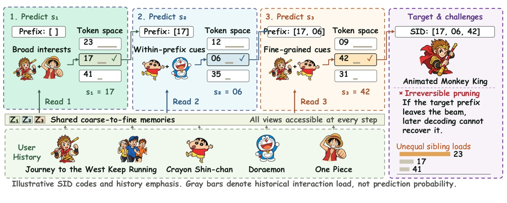
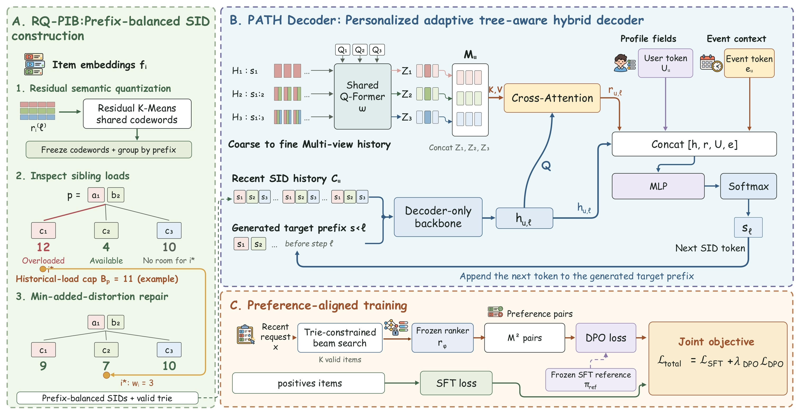
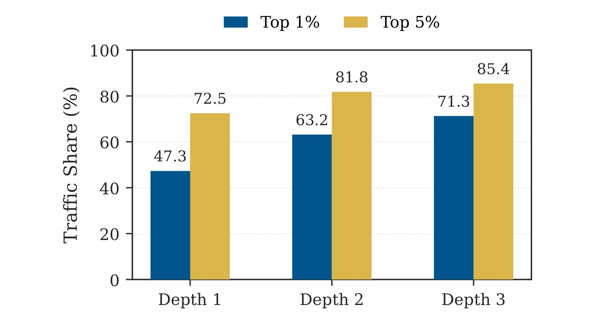
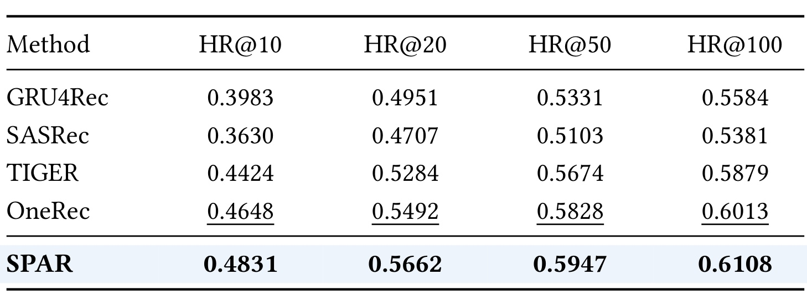
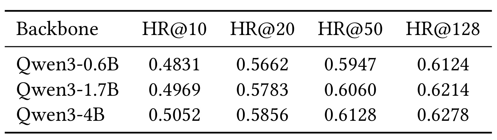
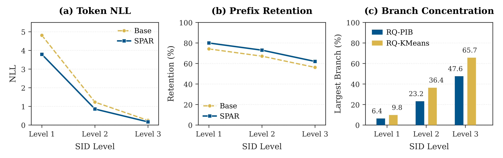
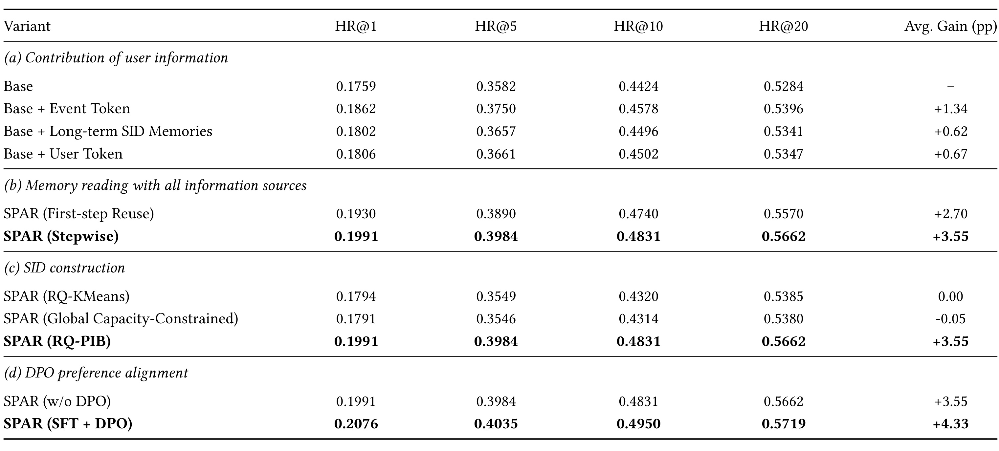
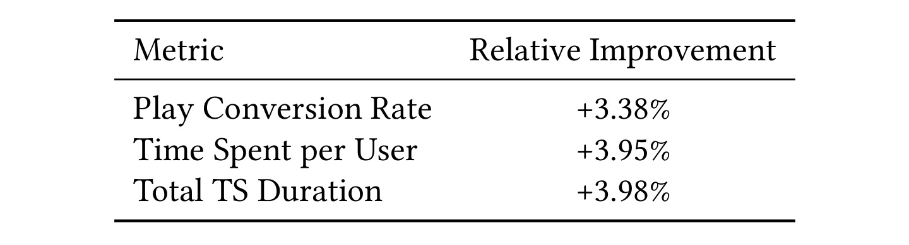

SPAR：以逐步个性化和前缀负载均衡改善生成式推荐
论文： SPAR: Stepwise Personalized Autoregressive Recommendation with Prefix-Balanced Semantic IDs
作者： Chunrui Zhang、Gaoyun Lin、Chang Zhou、Zheng Hu、Qiran Song、Shimin Cai、Tao Zhou。第一作者主要机构为电子科技大学，合作机构包括中国科学技术大学、西南交通大学与虎鲸文娱/优酷。
来源与时间： arXiv 论文入口，v1 于 2026-10-20 09:17 UTC 发布，北京时间 2026-10-20 17:17；本轮核验时间为 2026-10-22。
类别： 推荐算法；生成式推荐、语义 ID、长期兴趣、偏好对齐。
代码/项目页： 未核验到独立官方代码或项目入口。以下实验均为作者报告，未执行训练复现，工业日志未公开。
SPAR围绕语义ID生成召回中的逐层分支选择，将用户长期记忆读取和候选树的历史交互负载组织结合起来，并在优酷首页场景验证其检索效果。
每个生成前缀都会定义不同候选集合，而现有方法未充分考虑依赖前缀的用户证据与候选分支间失衡的历史交互负载，增加了不可逆分支选择错误并强化热门路径优势。
1. 背景和问题
SPAR研究的是用语义ID逐token生成目标物品的召回系统。在三层SID中，一个物品由三个离散码表示，模型从空前缀出发，依次预测首码、第二码和第三码。每次预测都相当于在当前父节点下选择一个子分支：第一步确定较宽的候选范围，第二步和第三步继续排除不匹配的物品。最终通过合法SID到物品的映射产生候选。这种组织把海量物品空间转换成一系列分类决策，也把一次召回失败拆成可以逐层观察的路径失败。
任务同时受到合法编码约束：每次预测都只能沿已有物品对应的语义树继续展开，最终完整编码才能映射成可召回物品。模型因此必须在有限候选束中保留有用路径，而不能先生成任意编码、再假设后续排序能够补回被排除的目标。
困难来自路径决定的不可逆性。采用有限宽度的束搜索时，模型只能保留当前得分较高的一部分前缀。一旦目标物品的前缀被移出候选束，后续即使第三层分类器很准确，也没有机会恢复它。因此，推荐生成中的误差并不限于最后一个物品的打分不准，还包括较早层级过早排除了正确子树。增大束宽可以保留更多路径，却增加服务成本，而且不能自动保证用户的细粒度偏好在每一步都被正确使用。论文选择同时改变路径的组织和导航证据，希望减少这种过早丢失。
用户证据也随前缀变化。一个用户既看西游题材内容，也看真人综艺和日漫，最初选择大类时可能需要宽泛兴趣；进入动画分支后，综艺行为的区分力就下降，而对角色、风格或细分类型的历史偏好开始更有用。固定用户向量或一份对所有步骤复用的长历史摘要，把不同决策的证据压在一起，未必能在分支竞争时提供恰当信息。这里的目标尚未完整生成，模型不能直接像传统目标注意力那样把一个已知候选物品作为查询，只能依赖当前SID前缀及近期行为构造查询。这个差别使前缀条件的记忆读取成为独立建模问题。

Figure 1用示意SID [17,06,42] 说明同一段历史为何需要读取三次。第一步从多个宽泛兴趣中选择17，第二步只在17对应的候选集合内区分06和其他分支，第三步再以更细证据选择42。图下方的三组记忆在每一步都可以被访问，因而不能把三组视角理解为第一步只能读第一组、第二步只能读第二组的硬路由。右侧目标“动画孙悟空”强调了早期路径被剪除后的不可恢复性，右下灰条表示历史交互负载，并不表示模型已经输出的预测概率。区分这两种量很重要：论文认为频率可能影响学习与分支竞争，但图本身没有测量概率校准，更没有证明热门物品在所有用户上的预测都过高。它把证据选择和分支负载放到同一个路径决策场景下，提供的是设计动机而非实验收益；后面的NLL、前缀保留率和负载集中度分别检验这些动机能否转化成模型行为变化。
另一个困难是语义树的局部负载偏斜。传统残差量化按物品向量距离分配码字，同一个分支可以包含少量超热门物品，也可以包含大量很少被交互的物品。因此物品个数接近不代表学习流量接近。训练时受到大量正样本支持的热门路径可能更容易胜出；同一层码字在全局被均匀使用，也不代表给定父前缀后的子分支均衡。一个码字可以在甲父节点下承担大部分交互，在乙父节点下很少出现，汇总后却看起来平衡。自回归解码的竞争发生在具体父节点下，汇总统计会掩盖真正需要处理的条件分布。
这种平衡又不能无限追求。物品向量的邻近关系表达语义相似性，如果为了使交互数严格一致，把语义很远的物品强行放入同一分支，生成器可能更难学习。并且单个热门物品的交互权重不可拆分，一条历史记录权重很大的物品就可能超过理想平均值。论文因此采用带颗粒度补偿的负载上界，在允许一定不均衡的前提下优先移动额外失真最小的物品。这个设定针对训练时期的历史交互量；把它进一步解释成未来曝光公平、供给公平或对所有长尾物品都有收益，都会超出论文证据。
SPAR的整体贡献因而是三个相互接续的环节：PATH在每个前缀下重新选择长期证据，RQ-PIB在索引构造时整理同父分支竞争结构，偏好对齐再用近期请求和冻结排序器细化候选偏好。长历史压缩与缓存使这种方案具有工业应用的可能，但论文的主要证据仍是准确率和线上参与指标。阅读时需要把结构变化、个性化读取、偏好目标各自的增益分开，尤其不能用最终线上联合系统的收益反推某一个模块独立贡献相同幅度。
从相关工作定位看，SPAR继承了语义ID推荐中残差量化与自回归生成的基本接口，也延续了长序列推荐中压缩、检索用户历史的思路。它强调的新增条件是“正在生成的部分目标”：传统目标注意力可以面对一个完整候选来读历史，这里却必须在候选身份尚未确定时选择证据。如果先用错误宽泛兴趣进入不相关子树，后续再精确的偏好匹配也只能在错误集合里竞争。因而用户向量容量与证据条件化是两个问题，扩大表示维度不能直接替代随前缀变化的读取。同样，负载调整与语义重构也是两个问题：负载均匀可能使训练分类更平稳，却可能破坏局部语义边界。论文同时安排了逐步读取对照和索引构造对照，正是为了避免把这两种改进混成一个无法解释的架构升级。真正需要观察的，是正确路径能否在实际搜索中留下，以及这种路径收益是否伴随可接受的语义迁移，而非只看最终命中率提高。
2. 方法
2.1 PATH Decoder：前缀条件的多尺度记忆读取
原文先介绍PATH，再介绍RQ-PIB，最后介绍偏好对齐。PATH输入包括长期物品历史、近期SID序列、用户属性和请求时已知的事件上下文，输出当前SID层的token概率。长期历史按累计SID前缀生成三个分辨率视角，而非按时间切成三段。历史中的每个物品在第一视角只暴露首码，第二视角暴露前两码，第三视角暴露完整三码，再加入位置与层级嵌入。原文式1–2可合并读为：
符号解释：用户为$u$，第$j$条长期交互物品为$v_{u,j}$，$s_r$表示第$r$层SID码，$E_r$是对应嵌入表，$k$为观察分辨率，$n$为长期历史长度。位置嵌入保留交互顺序，层级嵌入区别视角；$Q_k$是每组独立的可学习查询，$\omega$是三组共享的编码器参数，$Z_{u,k}$是压缩后的记忆。共享参数使模型从相同历史学习不同分辨率的共性，独立查询使压缩结果仍能保留视角差异。它压缩的是用户行为证据，不能仅凭Q-Former名称就假设作者额外输入了图像或视频帧。 近期历史走decoder-only主干。原文式3–4把每个近期物品的三个码嵌入按顺序拼接，所有近期交互都发生在目标之前：
符号解释：$m$是输入主干的近期交互数，$C_u$是只包含SID的近期上下文，$s_{<\ell}$是目标已生成前缀，$h_{u,\ell}$是预测第$\ell$层前的末位置状态，$\theta$是生成器参数。用户属性和事件信息不在这个式子中冒充历史token，而在输出侧参与融合。目标前缀每变一次，末状态就变一次，使同一用户的记忆查询随着候选范围收缩而更新。

Figure 2包含三个有明确数据流关系的原始模块。左侧RQ-PIB先生成索引和合法trie，再由右侧PATH沿该树预测；图中权重为3的物品从历史负载12的分支搬到负载4的分支后得到9与7，另一个负载10的分支虽没有超出11上限，却容纳不了权重3的物品。这一细节说明可行性检查必须看移动后的负载，不能只看目标当前是否未满。PATH部分把三组长期记忆拼在一起，用近期序列与当前目标前缀得到的主干状态作查询，返回相关证据后与User Token、Event Token共同进入MLP。其回环箭头表示新token会追加到前缀，下一步再次产生查询，而非只在第一步做一次长历史检索。下方训练链路先受合法trie约束产生候选，再由冻结排序器构造偏好对，冻结SFT参考提供DPO比值，真实点击正样本仍通过SFT损失保留基础任务。图展示的是联动关系，未展示各模块服务耗时；从图可推断记忆可以跨步共享，却不能据此算出线上延迟或缓存命中率。训练时真实目标前缀提供条件监督，推理时这些前缀来自模型自己的束搜索，因此错误前缀仍会改变读取内容，并不会被图中的长期记忆自动纠正。另一个需要沿箭头核对的区别是，用户属性与事件特征直接进入输出侧融合，并未在主干输入处伪装成额外历史物品；长期历史则经过压缩和交叉注意力后才进入相同融合节点。因而图中有三种时间尺度：较稳定的属性、可更新的长期记忆、当前请求与生成前缀。每种信号的更新频率不同，复用键值不能代替更新请求事件，也不能将前一步读出的证据固定给所有分支；这些接口关系正是理解逐步读取对照实验的基础。 具体读取遵循原文式5–6。所有压缩记忆先按token维连接成$M_u=[Z_{u,1};Z_{u,2};Z_{u,3}]$，每步重新计算查询和注意力：
符号解释：$m_{u,t}$为长期记忆第$t$个token，$W_Q,W_K,W_V$是查询、键和值投影，$\operatorname{LN}$为层归一化，$e_{step}$编码解码步，$d_a$是注意力维度，$a$为对所有记忆token归一化的权重，$r_{u,\ell}$是本步读出。不同步可以跨三组视角取证，不限制单步绑定单组。长期记忆和键值投影可跨步、跨beam复用，查询与归一化权重仍随beam前缀而变。若压缩阶段丢失了少见偏好，即使后续查询精确也无法读回，记忆容量仍是有效性边界。前缀条件的逐步查询是这里区别于固定用户摘要的核心机制。 原文式7–10进一步构造轻量混合决策token并输出概率，可在一个公式组中完整保留：
符号解释：$a_u$是属性字段嵌入拼接，$U_u$是门控投影所得User Token，$\odot$为逐元素乘法；$e^{evt}$是事件基础嵌入，$f$遍历事件字段，$\tau_u^{(f)}$是预测前可获得的离散字段值，$E_f^{time}$是字段嵌入表。$x_u$统称全部用户条件，$O_{\ell},b_{\ell}$将融合表示映射到本层词表。输出侧融合的意义在于让属性和请求时上下文直接参与每步决策；如果事件包含预测后信息，会形成标签泄漏，必须按照作者“预测前可用”限定重建特征。这里的门控有可学习非线性，但论文没有把它解释为对人群公平性的约束。 先进行目标物品最大似然训练，原文式11为：
符号解释：$D_{SFT}$是监督样本集，$v^+$为真实正例物品，损失只覆盖该物品的三个SID目标token。历史SID作为条件，不在此目标下逐个重建。训练用正确目标前缀，推理则自回归生成并以trie排除非法组合，二者状态分布存在差异。这也是实验同时看teacher-forced NLL和真实搜索保留率的理由：前者降低不自动等于错误路径都能修复。
2.2 RQ-PIB：以父前缀为单位修复交互负载
RQ-PIB的输入是物品嵌入、训练期历史交互权重、各层码本大小与容忍系数，输出固定语义ID与共享码本。它在每层先做普通残差K-Means，收敛后冻结中心，再对拥有相同先前SID的物品组单独修复。原文式12的残差为：
符号解释：$f_i$是物品$i$原始嵌入，$\mu_{j,s_j(i)}$是之前第$j$层已选的码字，$r_i^{(\ell)}$是当前层尚未解释的残差。首层没有前序中心，残差就是原始向量。先用K-Means++初始化和标准迭代学习全局共享中心，之后只动成员归属而不更新中心，避免平衡修复和中心漂移互相循环。物品在上层被迁移后，后续残差与父组将使用修改后的编码；因此这是一套按层构造索引的过程。 原文式13–14把负载定义与上界连接起来：
符号解释：$p$是当前父前缀，$I_p$是其物品集合；$w_i\ge0$为训练期交互次数，$W_p$是组总负载，$m_p$是组内最重物品，$z_i$是当前分支，$W_{p,k}$是子分支负载，$K_{\ell}$是本层码字数。$C_p$是理想平均负载，$\tau_{\ell}\ge1$允许偏斜，$B_p$是在容忍度和不可分物品颗粒度间取较宽的上界。第二项避免只按平均值设置不可实现目标；它并不要求每个分支都等于平均，更不要求每个分支拥有一样多物品。首层父前缀为空，深层必须分别计算，不能拿全层的单一上限替代所有父组。 对超载分支内的正权重物品，原文式15限定接收分支并计算额外重构代价：
符号解释：$k$是当前超载来源分支，$Q_i$是加入物品后仍不超限的同父目的分支集合，$q_i^*$是其中最近的中心，$\Delta_i$是迁移增加的语义失真。算法选定超载分支后，迁移当前可行候选中额外失真最小的物品，更新源与目的负载并重新求可行集合。这里最小化的是眼前一步的迁移代价，未证明全部物品联合分配的全局最优。原文可行性与有限终止依赖所有码字、包括空分支都可作为目的，并且没有其他分配限制；满足这些条件时每个被移动物品至多移动一次，每组最多移动其物品数次。业务若添加类别隔离、固定编码或禁入条件，就需要重新验证可行性。零总负载组或单码字组无需修复，历史负载约束也不会消除物品固有热门程度。
2.3 Preference Alignment：近期排序偏好与监督目标联合优化
完成SFT后，近期请求先经trie约束束搜索生成$K$个合法物品，用冻结排序器评分。排序器由点击和观看时长反馈训练，最高$M$与最低$M$候选两两组成$M^2$个偏好对。冻结SFT模型作为参考，不让偏好优化任意推高所有候选的概率。原文式16–17可写为：
符号解释：$x$为近期请求条件，$v^+,v^-$分别是排序器偏好的高低候选；$\ell$为整条SID的token对数概率和，下标$ref$表示冻结SFT参考，$\sigma$是sigmoid，$\beta$调节偏好比值尺度，$\lambda_{DPO}$控制偏好损失权重。联合SFT仍使用近期真实点击正样本，防止对排序器偏好的追随完全覆盖基本下一个物品任务。作者取$\beta=0.1$和$\lambda_{DPO}=0.1$。推理无需把冻结排序器放到每次token预测中，但训练偏好受生成候选集合限制，未被束搜索找到的物品不能通过这批偏好对获得直接比较监督；排序器已有的热门偏置也可能传递给生成器。
3. 实验结果
3.1 数据口径与历史流量集中
数据来自优酷首页生产日志，SFT使用数月播放记录，每日DPO使用近期请求及冻结排序器对候选的评分。用户按90:5:5分训练、验证、测试。默认骨干为Qwen3-0.6B，物品采用固定三层SID，负载仅由训练记录计算，SFT使用AdamW、学习率为$2\times10^{-5}$。推理使用trie约束束搜索，保证生成合法编码。全文没有公开完整用户数、物品数、逐日样本量、码本大小、束宽和运行硬件，不能将“工业规模”自行换算成特定亿级数据。用户划分也不自动说明每条时间边界和特征回溯规则都已公开，这些是复现还需追问的条件。

Figure 3首先检验设计动机。蓝柱为每个深度负载排名前1%路径的份额，黄柱为前5%；第一层分别约47.3%和72.5%，第二层约63.2%和81.8%，第三层约71.3%和85.4%。正文给出更细值63.17%、71.26%、72.46%、81.79%、85.43%，图的四舍五入不构成不同实验。路径在各深度独立排序，因此不能把三个深度中的前1%当作同一组物品沿树追踪，也不能把蓝柱从第一层到第三层的增长解释成某批用户兴趣越来越单一。它呈现的是历史训练流量集中到少数编码路径的现象，而不是模型推理概率、在线曝光分配或覆盖率。该现象为同父负载修复提供现实背景；但Figure 3是汇总热门路径统计，对应的父前缀局部效果仍要看Figure 4(c)，不能仅凭此图证明局部约束的优越性。
对这张流量图还需要一个分母意识：第一层、第二层和第三层的路径总数并不相同，所以“前百分之一”在三个深度不对应相同的绝对路径数量。图反映各自深度内部的集中程度，无法直接计算目录中多少独立物品没有被观看。历史路径负载与未来候选曝光之间还隔着生成器、束搜索和后续排序链路；这些环节可能放大或缓和偏斜，必须另行测量，不能把图中的份额当成端到端平台曝光份额。
3.2 主结果与模型规模

Table 1将物品空间序列模型GRU4Rec、SASRec与语义ID模型TIGER、OneRec放在同一组HR@10/20/50/100指标下比较。SPAR分别为0.4831、0.5662、0.5947、0.6108，最强基线OneRec为0.4648、0.5492、0.5828、0.6013。对应绝对提高是1.83、1.70、1.19、0.95个百分点，相对提高约3.94%、3.10%、2.04%、1.58%，四项相对改善的算术平均为作者报告的2.66%。这意味着较小召回截止处的改善更明显，随着候选数扩大，差距缩小；符合改善早期路径选择的解释，但不能仅凭截止趋势断言所有改善都来自早期保留。表中的SPAR数值与后面无DPO的完整SFT模型一致，因此不能将本表2.66%标成完整DPO系统相对OneRec的增益。GRU4Rec和SASRec低于TIGER，也不能证明ID生成范式在所有数据上都更强，因为这里的样本、调参与工业场景均特定。作者没有给出多次训练标准差、显著性区间或所有方法等算力信息；适宜把结论限定为这组评测中的整体优势，而不是跨场景保证。
进一步看基线与指标的关系，HR衡量真实下一个物品是否落在前若干候选中，对候选内部排序质量的刻画有限，也没有说明被推荐的其他物品是否同样适合用户。SPAR在四个截止都高于OneRec，说明优势不只由一个特别选取的候选数支撑；但表中没有NDCG、用户覆盖率和负反馈，无法判断候选顺序、内容多样性与用户体验是否同步提高。以HR@10为例，0.4831减0.4648得到0.0183，将其乘一百是百分点，再除以0.4648才得到相对改善。若把这两种计算混用，就会把同一个实验写出不同量级的收益。表格还没有给出不同活跃度用户的权重，汇总提升有可能主要由高活跃群体贡献。独立复现应同时报告按用户平均与按请求平均的口径、重复随机种子及各类召回预算，才能明确这一平均优势覆盖哪些请求。

Table 2固定数据、SID码本、长历史编码器及评测协议，骨干从0.6B扩大到1.7B、4B。HR@10由0.4831升到0.4969再到0.5052，第一段增加1.38个百分点，第二段增加0.83个百分点；HR@20为0.5662、0.5783、0.5856，HR@50为0.5947、0.6060、0.6128。这组结果支持扩大生成器有用，同时边际收益递减。最后一列明确是HR@128，数值0.6124、0.6214、0.6278；它与Table 1的HR@100不是同一截止，0.6B的0.6124和0.6108也不能写成重复实验波动。表内可比较同列模型规模差异，跨表则只能比较双方共同的10、20、50截止。作者据此认为1.7B具有较好的质量与容量折中，但表未列延迟、吞吐、GPU显存或成本，所以这里只能说质量曲线有折中迹象，不能把“1.7B最划算”变成已测得的性价比结论。相同码本条件有助于隔离模型容量，却仍不足以知道更大骨干是否需要不同束宽、缓存策略或训练预算才能在生产兑现收益。
规模实验也提供了一个实用的研究顺序：先在固定索引下观察容量变化是否仍有收益，再讨论索引优化与扩大模型是否互相替代。这里三个规模均沿用相同码本与长历史编码器，因此它只能说明在这套固定输入条件下更大骨干的效果，不能推出长历史编码器永远不需要同步扩大。与此同时，参数量从零点六到一点七、再到四十亿的增幅并不相同，两个区间的命中率增量不能当作单位参数收益的严格对照。若要做成本决策，需要统一硬件、批大小、量化方式、并发请求和束宽，报告同一服务预算下的命中率。论文也未比较更大模型以更小束宽是否足以抵消额外计算，或者小模型以更多记忆token是否达到类似结果；这些缺失使“质量与容量折中”适合成为实验假设，而非最终部署套餐。表中四列一起提高仍是有意义的容量证据，它提示PATH的收益没有在最小骨干上立即饱和，但没有单独证明其长期记忆压缩无损。
3.3 逐层诊断与分支集中度

Figure 4(a)测量给定正确前缀时的token负对数似然。三层Base为4.81、1.23、0.25，SPAR降至3.79、0.86、0.17，相对下降21.21%、30.08%、32.00%。这表明在正确条件下，SPAR对目标token给出更高概率；层间词表和条件不同，不能因为第三层NLL更小就说第三层比第一层更容易或更重要。Figure 4(b)转向实际束搜索，Base三层目标前缀保留率依次为74.23%、67.15%、56.24%，后两次分别丢失7.08与10.91个百分点。SPAR曲线整体更高，作者摘要报告三层平均保留率提高5.79个百分点；本轮不把图上没有逐点文字标注的SPAR值读成精确小数。把NLL和保留率并置，才能区分“正确路径上更会预测”和“搜索时确实更少剪掉目标”，两者提供互补而非重复证据。
Figure 4(c)进一步看以流量加权的最大子分支份额：普通RQ-KMeans到RQ-PIB在三层分别从9.8%降为6.4%、36.4%降为23.2%、65.7%降为47.6%。绝对下降为3.4、13.2、18.1个百分点，相对下降约34.69%、36.26%、27.55%，平均约32.84%。这项统计考察给定父前缀的最大子分支，而Figure 3统计全层最热门路径，不能混为同一个集中度口径。即使第三层降低到47.6%，局部仍可能有明显主导分支；RQ-PIB允许容忍度与重物品，目标本来就不是严格等分。三张子图一起把用户证据、真实搜索和索引负载串成较完整的证据链，但均为离线分析，没有直接测量未来推荐曝光是否更均衡，也未提供按长尾、人群或内容类别细分的收益。用它们支持检索机制改善合理，用它们宣布热门偏差已经消除则不成立。
还应区分这三种诊断的样本条件：NLL在给定目标前缀下计算，保留率跟随搜索过程中候选束变化，最大子分支份额则基于历史交互统计。它们不是相同随机变量，无法把相对下降量直接相加得到总收益，也无法用NLL降低幅度预测线上观看时长。更严谨的扩展是按同一请求记录各层正确前缀是否存活，再按热度与历史长度分组，定位结构调整具体挽救了哪些目标；全文未给出这类逐请求联结分析。
3.4 消融揭示的收益来源

Table 3分四组隔离贡献。前三组均只使用SFT，最后一组从完整SPAR SFT检查点出发增加DPO，SID映射、结构和解码配置保持不变。表头的Avg. Gain以Base的HR@1/5/10/20为参考，单位是平均绝对百分点，不是相对百分比。Base四项为0.1759、0.3582、0.4424、0.5284，加入Event Token平均提高1.34个百分点，单加长期SID记忆提高0.62，单加User Token提高0.67。事件上下文在这组单项比较中最突出，说明请求时条件值得单独建模；这些单项不是独立线性可加分量，把1.34、0.62、0.67相加也不能预测组合效果。
记忆读取比较更直接：保留全部信息源时，首步读取后复用的平均增益为2.70个百分点，每步读取为3.55个百分点，多出0.85个百分点。对应HR@1由0.1930到0.1991，HR@20由0.5570到0.5662，因此收益并非只发生在单一截止。这个控制较好地支持前缀自适应读取，而非单纯多输入了一类特征。SID构造组中，普通RQ-KMeans的四项为0.1794、0.3549、0.4320、0.5385，全局容量约束略降至0.1791、0.3546、0.4314、0.5380，平均相对Base的绝对变化标成-0.05个百分点；同父前缀约束则达到完整SFT的0.1991、0.3984、0.4831、0.5662。全局均衡并未带来收益，支持“约束要与解码竞争位置一致”的核心主张。普通RQ行的平均变化四舍五入为0.00，不等于每项都和Base完全一样。
DPO再将上述SFT四项提高到0.2076、0.4035、0.4950、0.5719，各项绝对提高0.85、0.51、1.19、0.57个百分点，平均0.78个百分点；表中相对Base的平均增益因此从3.55变成4.33。HR@1相对改善约4.27%，但0.78绝不能写成DPO平均相对提高0.78%。这组对齐比较可以归因于在相同结构和索引上的偏好阶段，尚不能证明排名器标注比真实用户偏好更可靠。Table 3的分组仍未覆盖所有交互项，例如缺少在多种容忍度、不同记忆容量下重新训练DPO的完整因子设计，所以适合识别主要收益来源，不适合把所有平均增益拆成互不重叠、可任意叠加的模块账单。
3.5 线上实验与工程缺口

Table 4报告优酷首页7天A/B试验，两组用户桶各约占总流量10%，对照是生产Base，处理组是经过SFT和DPO的完整SPAR。播放转化率相对提高3.38%，人均观看时长提高3.95%，总观看时长提高3.98%。这三个数都以生产Base为分母，不能当作相对OneRec的收益，也不能与离线HR提升相加。播放转化和时长同时上升表明这批线上流量中候选改善伴随参与度变化，但总时长与人均时长本身相关，不能把三项当作三次互相独立验证。正文“TS Value per User”与表中“Time Spent per User”在此语境下对应人均观看时长，尚未披露具体单位、截断规则、异常用户过滤或置信区间。约10%处理流量说明已经做生产试验，不代表已全量切换，也不代表跨长期季节性或内容周期仍有相同收益。线上联合系统还包含索引、读取与DPO三个变化，缺少分桶线上消融，不能把3.95%全部归到某一个模块。
效率方面，论文明确提出压缩长期记忆、复用跨步和跨beam键值投影，具有降低重复计算的机制依据；但全文没有单独的延迟、吞吐、显存、训练耗时或成本表。Table 2是容量与准确率研究，不是效率实测。部署评估应另补束宽变化下的p50/p99时延、记忆读取开销、缓存失效成本和索引刷新成本。由于用户的历史变化与码本更新可能引起记忆或编码失配，还需要测量更新频率及回滚路径。这些是从架构出发的工程推论，本轮没有对应测量，均不能写成作者已经解决的生产事实。
在评估线上表时，人均观看时长和总观看时长的接近涨幅提示需要查看两桶人数、曝光和活跃口径是否一致。作者没有给出原始基值，不能反算每个用户多看了几分钟，亦不能据此推算业务收入。后续若公开桶级原始统计，应同时确认实验是否按用户固定分桶、是否存在跨桶缓存或索引共享，以及时间段内是否有大促或热门内容上线。这些因素关系到效应的解释和重现，但本轮没有证据认定试验存在此类问题。
4. 总结
SPAR最有价值的地方是把生成召回中两个通常分开处理的对象放在同一条件决策上理解：树结构规定给定前缀后有哪些分支竞争，用户证据决定这些分支的概率。PATH通过前缀驱动的查询每步读取长期记忆，RQ-PIB通过历史交互权重整理同父分支的竞争负载，偏好阶段再以近期请求的排序信号细化目标。Table 3中首步复用弱于逐步读取、全局容量约束弱于父前缀约束，使这种配合具有比单纯主结果更清楚的实验支撑。对生成式推荐而言，可迁移的是在检索路径尚未完成时，以部分候选结构作为条件重新取证的设计，而不是把一个更大的用户摘要塞给所有步骤。
对大模型系统的启发也应保留条件。若一个任务通过树状或多阶段动作空间逐步排除候选，记忆检索可以随着部分输出更新，缓存的应是相对稳定的证据库和键值，查询应反映当前状态。但普通文本生成的token未必对应稳定物品树，历史交互权重也未必是语言任务中的合适负载，所以不能直接照搬RQ-PIB到通用LLM词表。推荐场景中先在真实父前缀上定位失衡、再保持语义失真受控，是比追求全局码字使用均匀更具体的研究路线。
需要持续保留四个限制。第一，证据集中于单一优酷首页场景，缺少公开数据和独立复现，推广到电商、短视频或冷启动任务仍不确定。第二，历史交互均衡只能控制构造时的负载，无法保证未来曝光公平，更不能消除物品固有热门程度，分人群、分内容供给的效果尚不明确。第三，长期历史的压缩容量、码本大小、容忍度和束宽缺少完整配置与敏感性证据，读者无法据此重建准确的资源预算。第四，线上只有7天相对收益及约10%流量说明，缺少置信区间、长期留存、负反馈、多样性及新内容扶持等指标，对满意度和生态的更广泛结论需要额外试验。另一个实现风险来自可行性假设：一旦业务禁用部分目的分支或要求某类物品不能迁移，贪心修复的终止论证就需要重新检查。
后续首先应追踪作者是否公开实现与完整配置，尤其是Q-Former查询数、长短历史长度、每层码本、负载统计窗口、迁移比例与语义重构代价。其次，在相同生成器和训练预算下比较普通RQ、全局约束和同父约束，除命中率还记录不同热度物品的召回、路径保留与分支校准，验证约束是否只把误差搬到别处。第三，将逐步读取和DPO分别做线上消融，补充分桶样本量与置信区间，避免联合系统收益无法归因。第四，报告不同束宽和骨干规模下的真实服务成本，并模拟热门内容突发、目录增删与码本刷新，检查固定历史负载的时效性。只有这些结果补齐，才能把目前已成立的机制与准确率证据推进为可复制的工业方案。
复现的优先级可以据此收敛：先复刻同父负载统计及迁移过程，核对可行性前提、迁移后语义误差和编码合法性；再固定索引验证逐步读取是否确实提升目标前缀保留；最后才添加排序器偏好阶段和更大骨干。这样的次序让每一轮实验有可解释的控制变量，也能避免把未校准的排序器偏差过早引入索引诊断。对于仅能接触公开数据的研究者，应把工业线上数值作为外部证据，公开报告自己的数据分布和资源限制，而不宣称已经复现作者的生产收益。